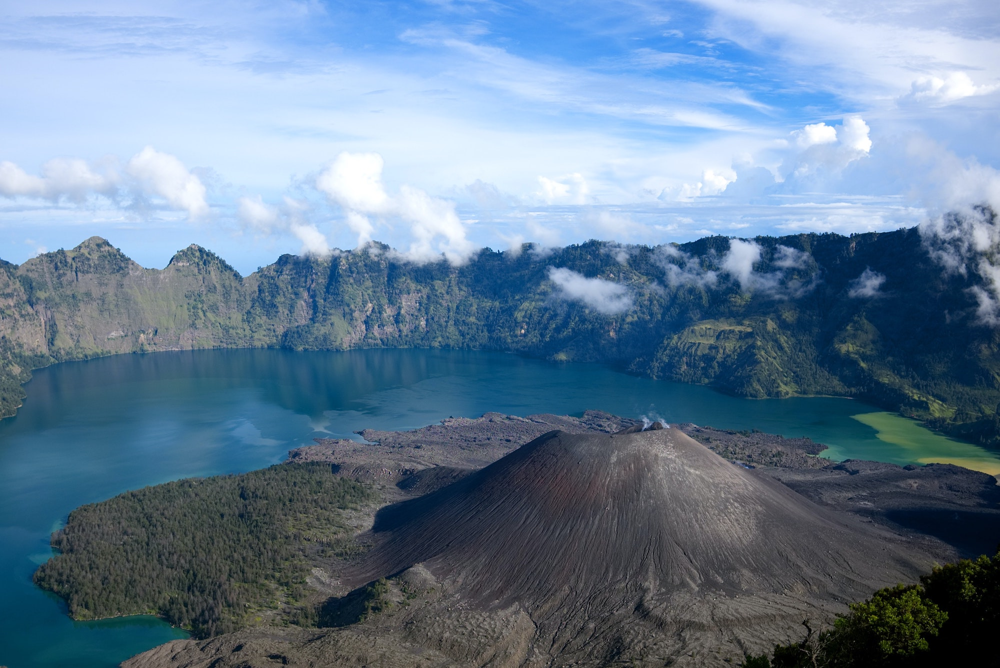
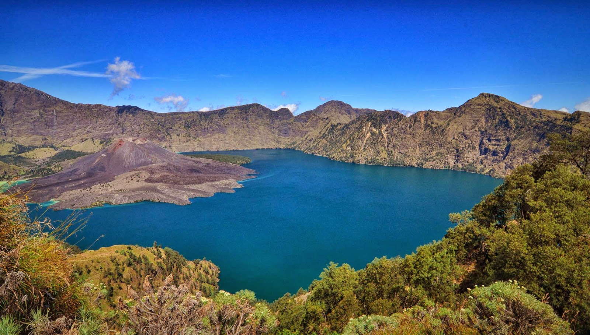

GALLERY RINJANI
Welcome to Rinjani Lombok Indonesia

GUNUNG RINJANI
Mengenal Gunung Rinjani, 9 Desember 2022
Gunung Rinjani adalah gunung yang berlokasi di Pulau Lombok, Nusa Tenggara Barat. Gunung ini merupakan salah satu gunung berapi tertinggi di Indonesia dengan ketinggian sekitar 3.726 meter di atas permukaan laut. Gunung Rinjani menjadi tujuan favorit para pendaki karena keindahan pemandangan alamnya. Gunung ini merupakan bagian dari Taman Nasional Gunung Rinjani yang memiliki kekayaan alam dan keanekaragaman hayati. Secara administratif, kawasan Gunung Rinjani berada di wilayah Kabupaten Lombok Timur, Lombok Tengah, dan Lombok Utara.

DANAU SEGARA ANAK
Pesona Danau Segara Anak, 9 Desember 2022
Salah satu daya tarik utama Taman Nasional Gunung Rinjani adalah Danau Segara Anak. Danau ini dapat dicapai melalui jalur pendakian resmi, antara lain jalur Senaru dan Sembalun. Perjalanan menuju danau membutuhkan waktu dan persiapan fisik yang memadai. Danau Segara Anak berada di ketinggian sekitar 2.010 meter di atas permukaan laut dan memiliki bentuk menyerupai bulan sabit. Pemandangan danau yang dikelilingi pegunungan menjadikannya salah satu destinasi alam yang menarik di Lombok. Di sekitar danau terdapat area yang dapat digunakan untuk berkemah sesuai ketentuan pengelola taman nasional. Kawasan ini juga memiliki sumber air panas alami serta sejumlah gua yang dikenal oleh masyarakat setempat. Pengunjung perlu mengikuti peraturan pendakian, menjaga kebersihan, dan menghormati lingkungan selama berada di kawasan Gunung Rinjani.